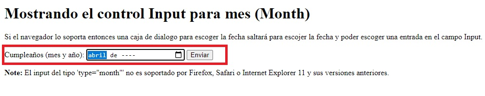
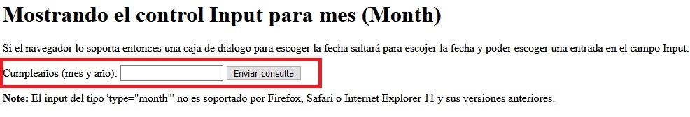

|
You develop an application in HTML5. The application has a field named field1 that uses the month
input type. ExplicaciónEsto es solo una pregunta de compatibilidad del navegador. En HTML5 tal y como se explica en la respuesta y en la referenca que se muestra al final solo los navegadores de última generación muestran el efecto de Input.Lo más sencillo sería abrir esta página con los distintos navegadores y ver el efecto del propio Input Date. Respuesta:Mostrando el control Input para mes (Month)Si el navegador lo soporta entonces una caja de dialogo para escoger la fecha saltará para escojer la fecha y poder escoger una entrada en el campo Input de fecha. Note: El input del tipo 'type="month"' no es soportado por Firefox, Safari o Internet Explorer 11 y sus versiones anteriores. 1. Mostrando el control Input en un navegador válido. En este caso usamos Chrome

2. Mostrando el control Input en un navegador NO VÁLIDO. En este caso usamos Firefox

Fuentes:https://www.w3schools.com/tags/att_input_type_month.asp |